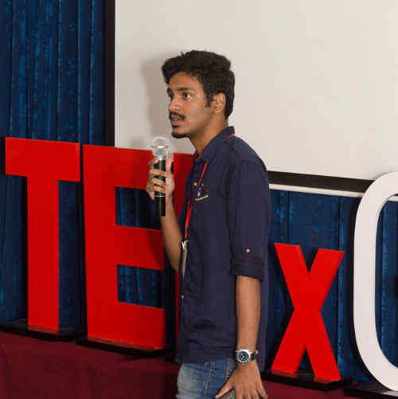
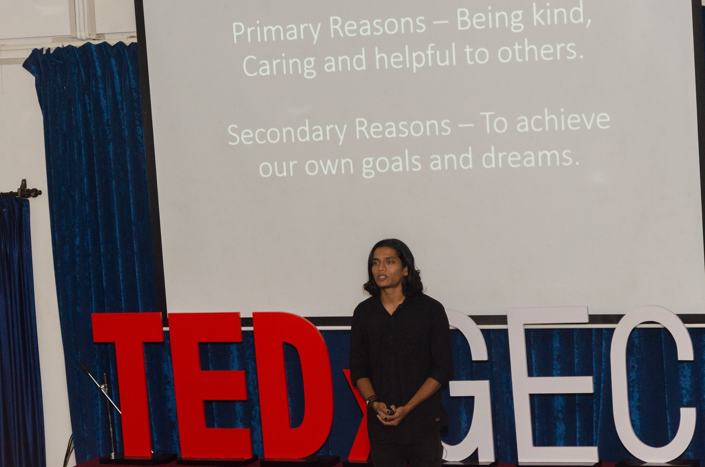

TEDx GEC 2016
The first ever TEDxGEC event was held on 16th of August 2016. With Shreegireesh Jalihal (TE Civil) as the licensee and primary organiser for the event, and Nikhil Singh (SE ETC) as the co-organiser, under the guidance of Dr Ganesh Hegde, TEDxGEC featured 4 speakers from different walks of life. The organising team which featured students from all 4 years and from all the branches slogged hard till event day. Held at the ETC auditorium and spanning over 2 and a half hours, TEDxGEC managed to bring in a fresh event into the campus. 
The event began with a talk by Kanan Tandi, a certified practitioner from Centre for Body Language and director of Body Speaks Better, who gave a 15 minute talk on detecting fake sexual harassment cases by using non-verbal cues alone. Kanan, who has trained airport security officials and CISF officers, used real videos of alleged victims along with actual victims to showcase exact differences in behaviour between the two.
This talk was followed by Gaurav Padte’s inspiring speech. Gaurav, a 21 year old MA student from Goa University is the creator and administrator of the highly popular humor page ANM. Humor aside the page admins are known for their frequent outings to do social service, from cleaning up public places like beaches and bus stands, to feeding the poor and homeless for free. Gaurav’s work has gained so much attention that the Prime Minister Shri Narendra Modi tweeted about the clean work at a stadium that Gaurav was involved in. His talk inspired people to take up direct action as a viable means of achieving desired results. 
The third act was presented by Mrs Marietta D’Souza who is a practicing counsellor and psychiatrist who has dealt with a range of people, from infants to adults. Mrs D’Souza once served as a clinical psychologist at an Indian Navy base. She spoke about dealing with heartbreaks and stressed about the need for people going through the situation to find the strength in them to move on and find new avenues in life to channel their energies towards.
The final performance for the day was by Somu Rao, who ended the event on a very high note with an extremely insightful and bold talk about debunking superstitions and black magic. Rao, who is an ex-president of the Federation of Indian Rationalists Association, has decades of experience in dealing with paranormal claims and has conducted a plethora of workshops featuring demonstrations debunking the same. He demonstrated all the major tropes used by the so-called mystics-from fire walking to producing jewellery from thin air- in a talk that surely opened the eyes of all those in attendance.
The talks were interspersed with TED videos featuring the best TED talks from around the world. There was an interval at the middle of the programme when the college band took the stage to perform music and entertain the audience. The event was attended by over 400 people; with 100 in the auditorium and over 300 people watching either the live screening of the event or the live streaming available online.